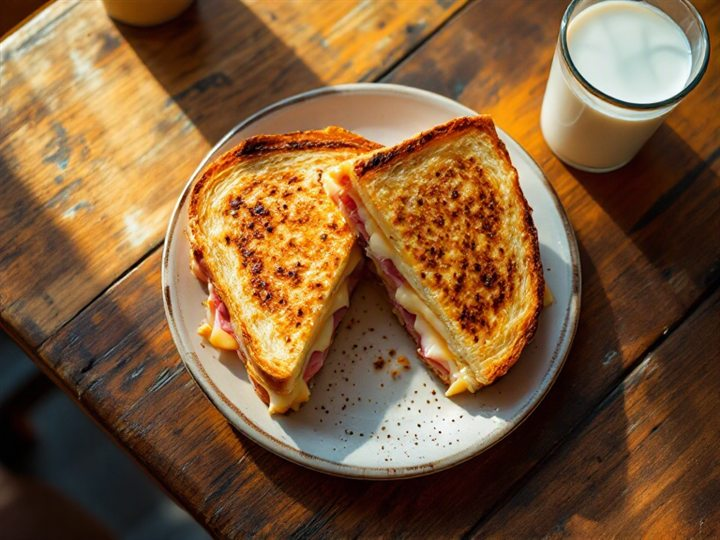
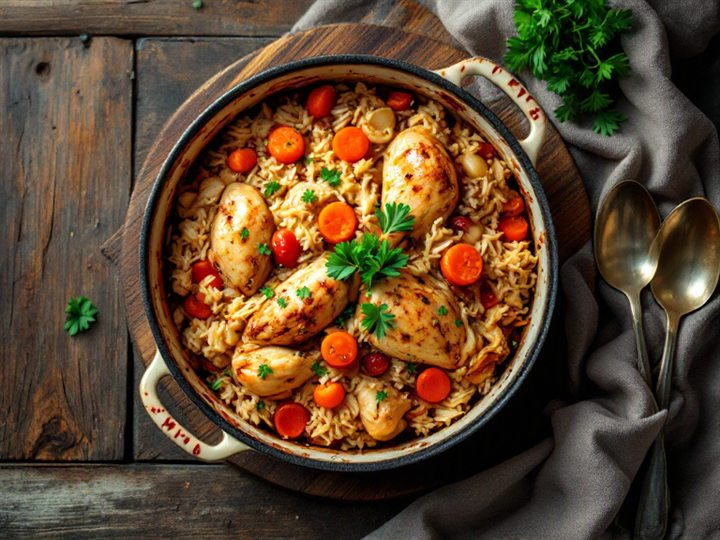
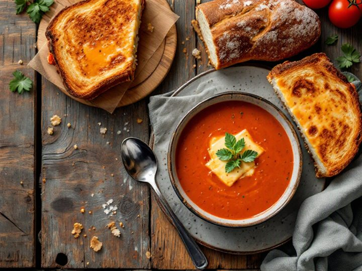
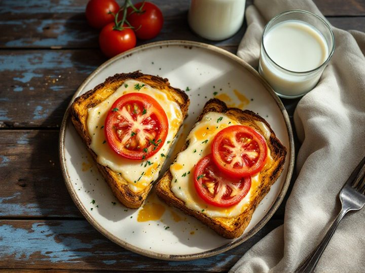
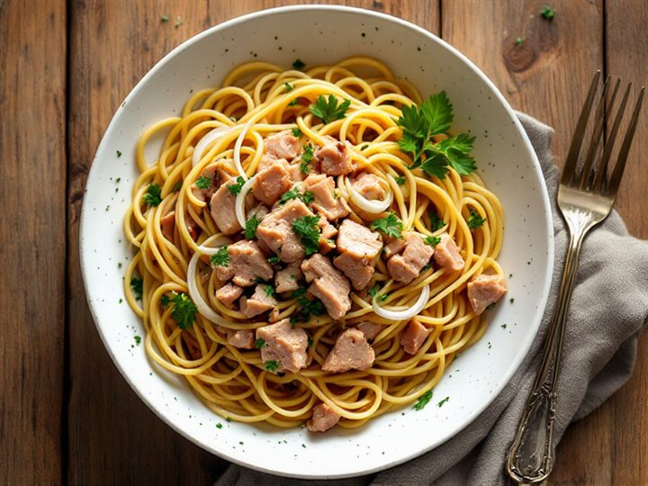
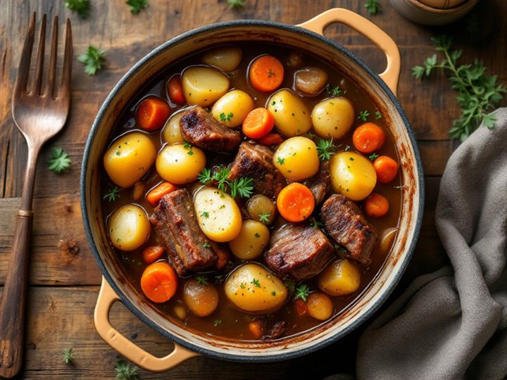
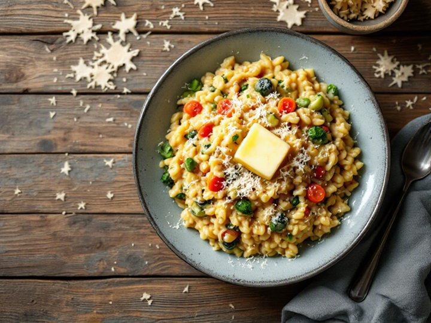
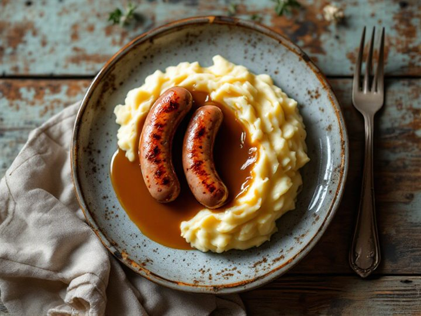
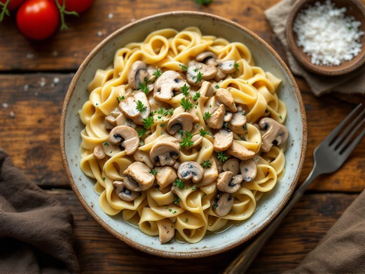
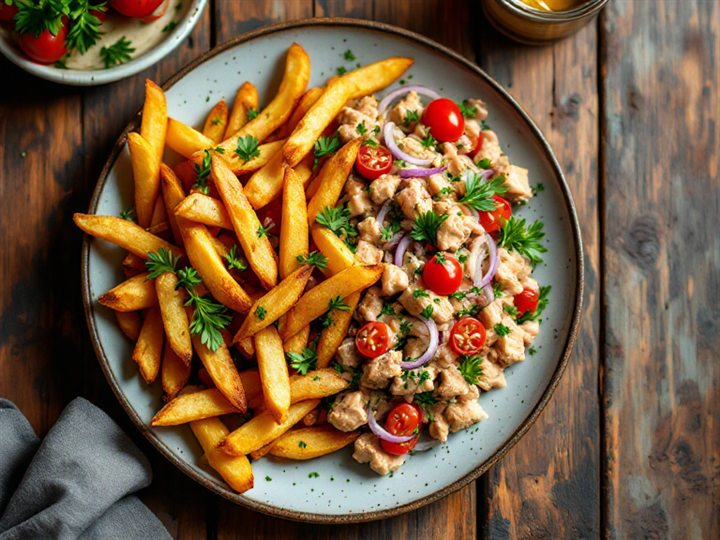

Four days of meals
Twelve meals and snacks from one €37.22 shop at Auchan, Castelo Branco. Every breakfast is a cheesy toast — tosta mista, queijo com tomate, queijo com marmelada — and the rest follows what you like: rice, noodles, pasta, potatoes, tuna, the cheapest pork and chicken, risottos, one-pot stews, mash and homemade soups, each with a sauce that fits.
The week
Day 1



Snack Yogurt and banana
Day 2



Snack Biscuits and banana
Day 3



Snack Yogurt and apple
Day 4


Snack Biscuits, banana and apple
Sauces
Gravy (molho de carne)
There is no ready-made gravy in this catalogue — in Portugal it is made at home. Pour the juices from the pork or chicken pan into a small pan, stir in a spoon of farinha (flour) and a splash of water, season with salt and simmer until it thickens.
farinha de trigo · pan juices · salCream sauce (natas)
Nata culinária warmed with a little onion and seasoning — the base for the stroganoff noodles and for finishing the risotto.
natas culinárias · cebolaBéchamel
Made at home instead of bought: whisk farinha into warm leite with a knob of manteiga and a pinch of salt. Goes over the mash and loosens the risotto.
farinha · leite · manteigaCheese for the toasts
Queijo flamengo melted on pão de forma is the whole breakfast. The same cheese goes on the soup toast and into the risotto.
queijo flamengo · pão de formaTomato sauce
Homemade from tomate triturado, onion and azeite, simmered down. Used for the tomato soup and the one-pot rice — kept away from the tuna, which is dressed with oil and onion instead.
tomate triturado · cebola · azeiteShopping list
| Item | Qty | Total € |
|---|---|---|
| Protein | ||
| Pedaços de frango Auchan (≈1 kg) | 1 | 2.24 |
| Rosários de porco Auchan, 670 g | 1 | 2.67 |
| Atum Polegar em óleo, 110 g | 2 | 1.58 |
| Salsichas Polegar Frankfurt, 8 un | 1 | 0.85 |
| Fiambre da pá Auchan, 120 g | 1 | 1.19 |
| Carbs | ||
| Arroz carolino Auchan, 1 kg | 1 | 1.09 |
| Arroz risotto Auchan, 500 g | 1 | 0.99 |
| Esparguete Auchan, 500 g | 1 | 0.69 |
| Massa noodles Auchan, 500 g | 1 | 0.99 |
| Batata branca lavada, 300 g | 3 | 1.53 |
| Batatas pré-fritas para forno, 1 kg | 1 | 1.85 |
| Pão de forma integral Auchan, 600 g | 1 | 1.15 |
| Pão — carcaça mistura | 4 | 0.80 |
| Dairy | ||
| Leite Mimosa meio gordo, 1 L | 2 | 2.08 |
| Iogurte Auchan aroma, 4×125 g | 1 | 0.73 |
| Queijo flamengo ralado, 150 g | 2 | 2.18 |
| Manteiga Mimosa com sal, 125 g | 1 | 1.39 |
| Sauces and pantry | ||
| Natas culinárias Auchan, 200 ml | 2 | 1.58 |
| Farinha de trigo Polegar, 1 kg | 1 | 0.60 |
| Azeite virgem extra, 250 ml | 1 | 2.59 |
| Cebola, 250 g | 2 | 0.84 |
| Alho granulado Auchan, 50 g | 1 | 0.69 |
| Cenoura, 100 g | 5 | 0.60 |
| Tomate triturado Auchan, 400 g | 2 | 1.38 |
| Sal Auchan de mesa, 250 g | 1 | 0.29 |
| Marmelada Auchan Extra, 450 g | 1 | 1.39 |
| Fruit and snacks | ||
| Banana Del Monte, 200 g | 6 | 1.44 |
| Maçã Golden, 200 g | 3 | 1.08 |
| Bolacha Nacional Maria, 200 g | 1 | 0.74 |
| Food subtotal | €37.22 | |
| Delivery | €1.49 | |
| Order total | €38.71 | |
Cooked once, used across the week
- Rice — the carolino cooked on day 1 doubles as a side; the risotto rice is cooked fresh on day 3.
- Chicken — one pan for day 1's one-pot rice, the rest shredded into day 4's stroganoff noodles.
- Potatoes — one pot of boiled potatoes feeds day 2's stew and day 3's mash; the oven fries are a separate bag.
- Cheese and bread — the pão de forma and queijo flamengo carry all four breakfasts plus the soup toast.
- Gravy — made once from the pork pan and poured over the day 3 mash and the day 2 stew.
- Prices are live from the Glovo Auchan catalogue and can change; refresh before ordering.
- Fresh produce and meat are sold by weight, so the final bill may differ by a few cents.
- The catalogue has no plain milk, so lactose-free milk is used, and the azeite is a 250 ml bottle.
- With Prime delivery the order is €37.22, leaving €1.78.